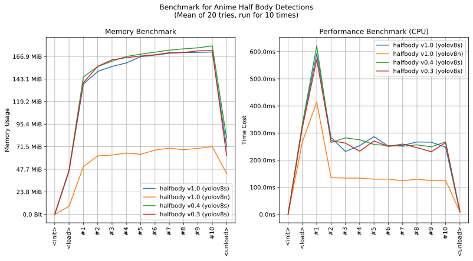

imgutils.detect.halfbody
- Overview:
Detect upper-half body in anime images.
Trained on dataset deepghs/anime_halfbody_detection with YOLOv8.

This is an overall benchmark of all the halfbody detect models:
Note
Please note that the primary purpose of this tool is to crop upper-body images from illustrations. Therefore, the training data used mostly consists of single-person images, and the performance on images with multiple people is not guaranteed. If you indeed need to process images with multiple people, the recommended approach is to first use the
imgutils.detect.person.detect_person()function to crop individuals, and then use this tool to obtain upper-body images.
detect_halfbody
- imgutils.detect.halfbody.detect_halfbody(image: str | PathLike | bytes | bytearray | BinaryIO | Image, level: str = 's', version: str = 'v1.0', max_infer_size=640, conf_threshold: float = 0.5, iou_threshold: float = 0.7) List[Tuple[Tuple[int, int, int, int], str, float]][source]
- Overview:
Detect human upper-half body in anime images.
- Parameters:
image – Image to detect.
level – The model level being used can be either s or n. The n model runs faster with smaller system overhead, while the s model achieves higher accuracy. The default value is s.
version – Version of model, default is
v1.0.max_infer_size – The maximum image size used for model inference, if the image size exceeds this limit, the image will be resized and used for inference. The default value is 640 pixels.
conf_threshold – The confidence threshold, only detection results with confidence scores above this threshold will be returned. The default value is 0.5.
iou_threshold – The detection area coverage overlap threshold, areas with overlaps above this threshold will be discarded. The default value is 0.7.
- Returns:
The detection results list, each item includes the detected area (x0, y0, x1, y1), the target type (always halfbody) and the target confidence score.
- Examples::
>>> from imgutils.detect import detect_halfbody, detection_visualize >>> >>> image = 'squat.jpg' >>> result = detect_halfbody(image) # detect it >>> result [((127, 21, 629, 637), 'halfbody', 0.9040350914001465)] >>> >>> # visualize it >>> from matplotlib import pyplot as plt >>> plt.imshow(detection_visualize(image, result)) >>> plt.show()